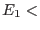
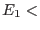
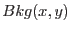

XMM-Newton Science Analysis System
emenergy (emenergy-8.8) [xmmsas_20170112_1337-16.0.0]
Description
emenergy
is the task which prepares the spectral analysis
of EPIC-MOS data.
It adds a quality flag to all events, prepares the (optical) background map,
computes the best PHA energy from all information available,
corrects for charge transfer losses
and translates it into PI.
The CCDBKG subroutine cannot be applied to slew data.
emenergy
calls (in order) the following subroutines, all of which
can be individually switched off:
- EVFLAG
flags all events whose pattern could not be fully recognized on-board
because of the proximity of:
1- a border of the CCD (CLOSE_TO_CCD_BORDER)
2- the left or lower border of the current window
(CLOSE_TO_CCD_WINDOW). In window mode, the right
and upper borders are analysed including the lines/columns next to them.
3- a pixel declared as bad in the on-board library
(CLOSE_TO_ONBOARD_BADPIX)
4- a line (CLOSE_TO_BADROW) or column (CLOSE_TO_BADCOL)
deactivated through a large offset (voluntarily or not)
5- a dead pixel/line/column (CLOSE_TO_DEADPIX)
6- a bright pixel not declared in the on-board library
(CLOSE_TO_BRIGHTPIX)
Only bad pixels immediately next to the main pixel of the event
(not diagonal) justify flagging.
If the CCD is read through
both nodes (known from the window keywords) then the limit between
nodes must be flagged as well (CLOSE_TO_NODE_BOUNDARY).
In case 5 (missing data) of dead pixels at distance 2,
then PERIPIX should be incremented for the CCDBKG task. Single events
in that case would not be flagged at all. Similarly
in case 4 (wrong data) at distance 2, then PERIPIX should
be incremented by 8 (to deactivate the event for CCDBKG).
In TIMING mode there are no bad pixels, only bad columns.
In Compressed Timing mode, events for which RAWX and PATTERN
were not known are flagged as UNKNOWN_RAWX_PATTERN.
The flag value allows to identify the reason for flagging
(using binary coding as described in evatt,
explicited in the XMMEA_nn keywords).
The flags set by EVFLAG are informative (contrary to
those set in emevents
which are mostly rejection flags).
The flagged events should be used or not
depending on the type of study. For spectral applications aiming at the
best resolution and most reliable energies it is safer to reject them.
The effective area should then reflect that.
For detection purposes they can be included to improve the statistics.
Finally, the events outside the field of view are flagged
(OUT_OF_FOV) to allow easily removing them from sky maps.
They are useful to estimate the particle background, though.
- CCDBKG
prepares the CCD background map used by MAKE_E to correct the energies.
By default (no outside information required) a map of the CCD background
can be formed by averaging E
 /(16-PERIPIX)
for all events encompassing a pixel in their 5x5 area.
Only unflagged events should be considered.
Large events (
/(16-PERIPIX)
for all events encompassing a pixel in their 5x5 area.
Only unflagged events should be considered.
Large events ( 2 pixels) are not suitable because
the charge leakage into E is usually non-negligible.
Events at distance 1 or less from the borders include under/overscans
in the outer corona and should not be used.
Events with PERIPIX maxperipix are not used either.
The default (maxperipix=0, no other event in the outer corona)
is rather strict to ensure the best quality, and may be relaxed
in the case of a piled-up source to maxperipix=2.
Events with  minenergy are also not used.
This is because a fraction of low energy events are noise events with
a wrong value of E (rejected by REJECT_E3E4 down the line).
2 pixels) are not suitable because
the charge leakage into E is usually non-negligible.
Events at distance 1 or less from the borders include under/overscans
in the outer corona and should not be used.
Events with PERIPIX maxperipix are not used either.
The default (maxperipix=0, no other event in the outer corona)
is rather strict to ensure the best quality, and may be relaxed
in the case of a piled-up source to maxperipix=2.
Events with  minenergy are also not used.
This is because a fraction of low energy events are noise events with
a wrong value of E (rejected by REJECT_E3E4 down the line).
The map is built in RAWX/RAWY coordinates.
To check for possible time variations CCDBKG outputs E averaged
over the CCD (or window) as a function of time.
If fillccdbkg=yes then the off-source areas of the CCD (where less
than fillminnumber good events contribute) are replaced
by the sum of averages over the current line and current column (off-source),
minus the full average. This is equivalent to replacing the integer
offsets onboard by real (higher precision) ones.
This filling procedure is applied separately to the areas of the CCD
within the field of view and outside the field of view.
To make the background determination more robust, REJECT_E3E4 is called
a first time (with no background map) before CCDBKG to remove the most
obvious noise events, and a 3 sigma clipping is applied to E locally
(with respect to a first estimate of the background).
This procedure does not apply in REDUCED IMAGING mode (no E information),
nor in TIMING mode.
In parallel (useccfdarkframe parameter) one can use
the background map
from the average dark frame in the CCF (of better spatial resolution).
All the E are then corrected for the difference between the dark map
and the local offset, before building the internal background map
(as described above) and building the PHA energy (in MAKE_E).
This allows to correct CCD defects at the pixel scale (whereas E
is an average over 16 pixels around the X-ray hit).
are then corrected for the difference between the dark map
and the local offset, before building the internal background map
(as described above) and building the PHA energy (in MAKE_E).
This allows to correct CCD defects at the pixel scale (whereas E
is an average over 16 pixels around the X-ray hit).
Another option is to use a specific background map instead
if data in DIAGNOSTIC mode have been recorded prior to the
scientific exposures (not PPS).
The decimal digits of the reference background (in ADU) are subtracted
from PHA and PI correctly, but not from the E (integers).
Consequently if the PHA column is regenerated later from
the same events list it will lose the decimal precision.
- REJECT_E3E4 (IMAGING mode, not reduced IMAGING).
Some instrumental effects result in wrong events associated with
pathological charge values next to it.
This information is known through the E and E data.
The REJECT_E3 procedure in emevents
rejected part of that noise.
An additional way to reject it is to reject all events
whose E/E and E/E (after CCD background subtraction)
lie outside the normal cloud, specified as an ellipse in that plane
(the ellipse parameters are in the E3E4ELLIPSE_n fields of
the XMM_MISCDATA CCF file).
This is done with flag BAD_E3E4,
and has little effect on true X-rays
(10% loss at 100 eV,
 1% above 150 eV).
1% above 150 eV).
This test cannot be applied directly next to rows or columns with
a large offset (taken from the OFFSETS extension).
In that case E is first corrected for the large offset.
E can be corrected as well if the offset is not too large
(such that E was truncated at -16384) and PERIPIX=0
(otherwise one cannot know how many pixels of the bad row/column
were counted in E). If E cannot be corrected it is set to 0 for
the test (i.e. the test bears only on E/E).
- MAKE_E
computes a single energy PHA (in ADU) for each event from a weighted
sum of the E, and the residual background  computed in CCDBKG,
assumed not to vary with time (i.e. the time series
output from CCDBKG is not used). This is performed via CAL_mosPhaBuild,
described in calmosalgo.
If large offsets (from the OFFSETS extension) exist next to the event,
E and E are corrected for that before being sent to CAL_mosPhaBuild.
Events with reconstructed PHA above the upper EMDH threshold
are flagged as OUTSIDE_THRESHOLDS.
MAKE_E adds TLMIN/TLMAX keywords to the PHA column.
By default, randomisation over 1 ADU is performed on E before building PHA.
Randomisation may be switched off using randomizeenergy.
In Timing and compressed timing mode, given that the ADU channels are not
uniform in size, a spectral redistribution can be applied (control by
ontimepha) to smear out this effect.
In TIMING mode MAKE_E does nothing but the randomisation
(the sum was already performed in flight).
- CTI_CORR.
Charge transfer losses will inevitably appear at some level
over time due to radiation damage. They occur as the lines
are transferred, first to the frame store area, then to the reading
register, and as the pixels are transferred along the reading register.
Knowledge will undoubtedly accumulate with time on this phenomenon.
In theory, charge losses could be local, could depend on energy and on
count rate. This is performed via CAL_mosCtiCorrect.The result is written into PI, so that PHA
always remains uncorrected for CTI.
In Timing mode RAWY does not correspond to the vertical position
on the CCD, but to time. The CTI correction should be called assuming
the source position, given by the SRC_RAWY keyword.
In Compressed Timing mode, the source position should be taken from
the SRC_RAWX keyword when RAWX is unknown
(events flagged as UNKNOWN_RAWX_PATTERN).
- ENERGY.
The energy of each event in ADU units (from MAKE_E or CTI_CORR)
is converted into pulse invariant (PI) units.
This is performed via CAL_mosGainCorrect.Events with reconstructed PI above the upper EMDH threshold
(converted into PI) are flagged as OUTSIDE_THRESHOLDS.
ENERGY adds TLMIN/TLMAX keywords to the PI column.
XMM-Newton SOC/SSC -- 2017-01-12